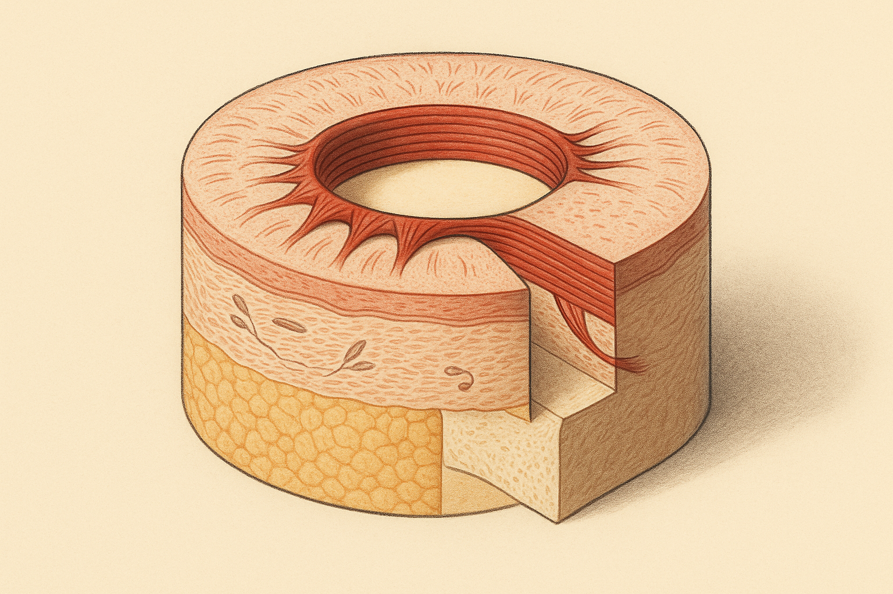
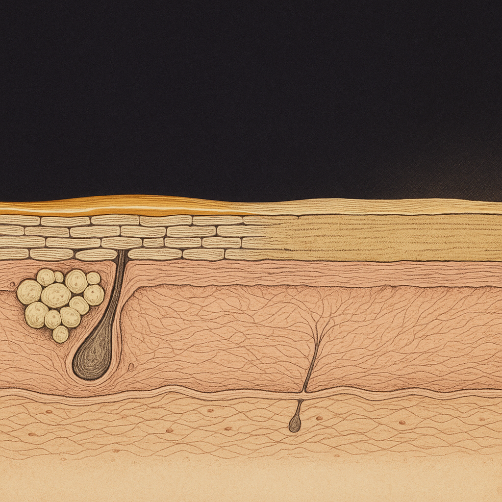
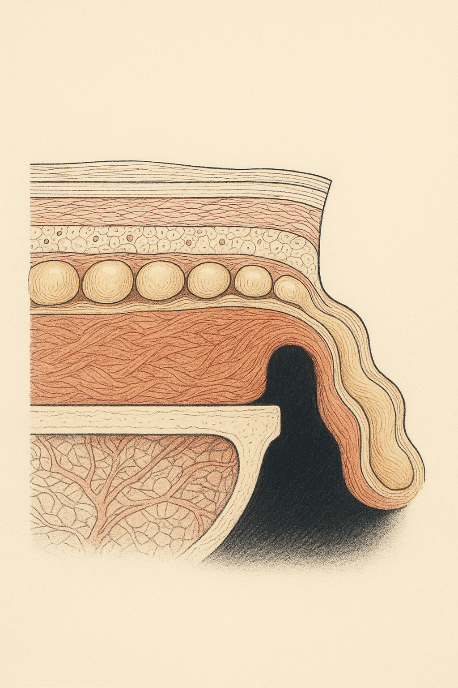

Review below. Reply approve to publish the Facebook post, or tell me edits.

The one part of your face you have never been taught anything about.
Researchers characterising the lip barrier in 2020 ran into a problem they could not solve by asking. Their volunteers kept licking the lower lip mid-measurement, and the involuntary wetting was corrupting the readings. The fix was not a clearer instruction. They fitted participants with a dental fixation device to hold the lip physically away from the tongue.
So, why do lines form around the mouth? Three things stack up. The muscle that circles the lips has no bone of its own to pull against, so many of its fibres anchor straight into the skin, and every purse and sip folds the surface along the same radiating lines. The lip itself has no oil glands, so it cannot make the surface film the rest of your face produces without being asked. And the bone and fat sitting underneath the area quietly reduce over decades, so the skin above has less to rest on.
Think about how much work your mouth does in a day. Speaking. Eating. Drinking. Smiling, pursing, sipping, and the small unconscious tightening when you concentrate. Thousands of movements, every day, for decades.
Now think about what your routine does for that area. For most of us, honestly, it stops at the lip line. Serum goes on the cheeks and forehead. Retinoid instructions usually say to keep clear of the lip border. Then a balm goes on the lips, as a separate act, filed somewhere closer to comfort than to skincare.
So the busiest part of the face ends up the least included. That is not a discipline problem. Nobody ever explained what is actually down there, and it turns out this zone plays by a different set of rules from the rest of your face.
Most muscles in the body work bone to bone. They shorten, a joint moves, and the skin above simply slides over the top of it.
The muscle around your mouth does not work like that. The orbicularis oris is a sphincter, a ring, and it has no bone of its own to pull against. A good share of its fibres terminate directly in the dermis of the lips and the skin immediately around them, along with the dense fibrous knot at each corner of the mouth where several muscles meet.
Translate that and it explains the pattern you see in the mirror. Every purse, every sip through a straw, every consonant you form tightens a ring that is anchored into the surface itself, so the movement is not absorbed underneath. It is written into the skin. And because those fibres run roughly outward from the ring, the creases they leave run the same way: outward from the lip border, like spokes. Perioral lines radiate because the muscle making them pulls from a circle.
The vermilion, the coloured part of the lip, is not really skin and not really the lining of your mouth. It is the transition between the two, and it is missing things you would take for granted anywhere else on your face.
There are essentially no sebaceous glands. No hair follicles. Which means the lip cannot make its own surface oil film. Everywhere else, your skin quietly produces a thin lipid layer all day without being asked. On the lip, whatever film is there, you put there. That single fact explains most of the behaviour people find baffling about this area.
Its surface deck of keratin is also thin, and the dermal papillae carrying the capillary loops sit unusually close to the top with very little pigment above them. That is why a lip reads red: you are partly looking at blood through a thin, poorly shaded window. It is also why it is a poorly shielded site.
One honest caveat, because this is where the internet gets loose. You will read that lips lose water many times faster than the rest of the face. Be careful with that number. The area is small, curved, constantly moving and constantly being moistened, which makes clean measurement genuinely hard. When Bielfeldt and colleagues characterised the lip barrier with confocal Raman spectroscopy in 2020, they actually found lip skin comparatively well hydrated. What is not in dispute is the structural point: no oil supply of its own.
Come back to that dental fixation device, because it is the detail from the study that is hardest to shake.
Sit with the situation for a second. In a controlled study, with people who had volunteered, who knew they were being measured, and who had been asked not to do it, the behaviour could not be stopped by asking. It had to be prevented mechanically.
There is no judgement in this. It is the opposite of a willpower story. It is a reflex, invisible to the person doing it, and almost certainly the single most under-recognised input in this zone. Saliva is not a moisturiser. It wets the surface, evaporates off, and leaves things no better than it found them, which is why the lips that get the most attention in a dry week are often the ones that feel worst. The same loop runs with balm every twenty minutes. The relief is real. The relief is also why you reach for it again.
This is the part that gets quietly left out of almost every article on the subject.
The soft tissue around your mouth is sitting on a platform, and the platform moves. Bony support at the upper and lower jaw reduces with age, and the small fat compartments in the region thin and descend. The skin above has less to sit on, so it folds, settles and drapes differently, regardless of what its own collagen is doing.
Worth saying plainly: no topical and no device changes a support structure. If the change that bothers someone is coming from underneath, that is a conversation with a qualified clinician, not a product. Anything that implies otherwise is selling you something.
Keeping this short, because it is one study and it deserves to be represented accurately.
Chien and colleagues (2016) built a gender-specific photonumeric scale for grading perioral wrinkling, the sort of standardised reference set that lets different assessors score the same face the same way. Across the people they graded, severity was predicted by age, by gender (higher in women) and by years of smoking.
The limits, in the same breath. It was 143 people, cross-sectional (a single moment in time rather than anyone followed over years), and a predominantly Caucasian sample. And a scale is a measuring instrument, not a treatment finding. It tells you what tracks with severity, not what to do about it.
Nothing here is exciting, which is usually a good sign.
Balm relieves and seals. It does not rebuild anything, so reapplying is maintenance rather than progress. That is fine, as long as you are not waiting for it to fix something.
The skin around your mouth is facial skin. It should receive whatever the rest of your face receives, gently and with the same consistency, rather than your routine stopping at the lip line.
The lower lip is one of the sun-exposed sites people most reliably skip.
And smoking is the one modifiable factor the evidence above actually named.
So, a genuine question, and the answers are likely to split evenly. Which of these do you do without noticing: the licking, the balm every twenty minutes, or stopping your routine at the lip line?
Redermis makes a light therapy mask for the face and neck.

In a 2020 study of the lip barrier, researchers had to fit volunteers with a dental device to physically stop them licking their lower lip. Asking them not to had not worked. The habit was invisible to the people doing it.
And that is the point about this zone: almost nobody has ever been taught how it works.
The coloured part of the lip has essentially no oil glands of its own. Unlike the rest of your face, it cannot produce a surface film. So balm is the film. That is why it wears off, why reapplying feels endless, and why it reads as relief rather than repair.
Then there is the border. Most routines stop at the lip line. The skin around the mouth is ordinary facial skin, doing ordinary facial work, and it quietly gets skipped, every night, for years. Not because anyone decided to skip it. Because nobody mentioned it was there.
Genuine question: are you a licker, a reapplier, or a skipper? And has anyone ever actually told you how this part of your face works?
(Tag the friend who reapplies balm every twenty minutes. She will recognise herself immediately.)
## Hashtags
#SkinScience #LipCare #SkinBarrier #SkincareRoutine

The lines around your mouth are not only a skin problem. The platform underneath them is moving.
Underneath sits a platform of bone and small pads of facial fat. Over decades that platform quietly reduces. The bony support recedes a little. The fat pads shrink and slide lower. So the skin above has less to rest on, and it settles into the space left behind.
No cream and no device changes a support-structure problem. Knowing which problem you actually have is worth more than another product.
The surface has its own separate quirk. The lip itself has no oil glands, so balm is relief rather than repair.
Save this for the next time someone promises you a cream for this zone.
Which one are you: never noticed, always wondered, or just realised it right now?
Full write-up is linked in bio if you want the anatomy.
## Hashtags
#skinscience #skinlongevity #facialanatomy #skineducation #periorallines #facialfatpads #knowyourskin #australianskincare #skincareaustralia #skinsciencefacts
## Title
Why Lines Form Around The Mouth: The Facial Zone With No Oil Glands
## Description
The mouth zone plays by its own rules. A ring muscle anchors straight into the skin. Every purse and sip folds it along the same lines. The tissue has no oil supply of its own, and the capillaries sit unusually close to a thin surface, which is why lips read red. The platform underneath (bone and small fat pads) shifts with age too, so the skin above has less to rest on. Balm brings relief rather than repair.
## CTA
Which one is yours: the licking, the balm every twenty minutes, or stopping your routine at the lip line? Pin this to remember it next time your routine stops at the lip line.
## Hashtags
#SkincareScience #SkinLongevity #SkincareTips #FacialAnatomy
Note: this pin reuses the Instagram image (instagram.png, 1024x1536, already Pinterest's native 2:3 pin ratio), with no text overlay. There is no Pinterest image prompt by design.